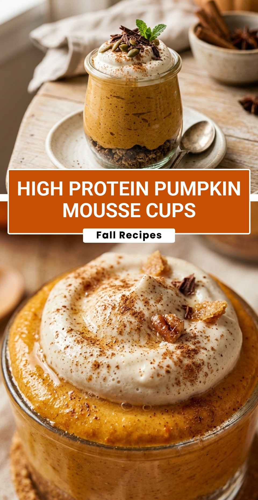

High Protein Pumpkin Mousse Cups
October 18, 2026

High Protein Pumpkin Mousse Cups are the ultimate guilt-free treat for autumn lovers. As the leaves turn and the air gets crisp, many of us crave the cozy flavors of pumpkin spice but want to stay on track with our fitness goals. This recipe bridges that gap perfectly, offering a decadent, airy texture that tastes like pumpkin pie filling but packs a powerful protein punch.
Recipe Information
Prep Time: 15 minutes
Cook Time: 0 minutes
Total Time: 15 minutes
Servings: 4
Difficulty Level: Easy
Nutrition Information
Calories per serving: 165
Protein: 18g
Carbohydrates: 16g
Fat: 2.5g
Fiber: 4g
Sugar: 9g
Sodium: 115mg